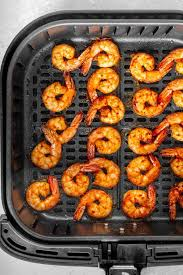

Return to Home
Air Fryer Shrimp

Description
This is some air fryer shrimp. its only like 400 calories for a pound of shrimp, and its 90 grams of protein! Wow. Those are some crazy macros.
Ingredients
- 1 lb Peeled Deveined Cooked Shrimp
- Old Bay Seasoning
- An air fryer probably
Recipe
- Preheat the air fryer to 400F
- Add the shrimp for 3 minutes to melt the ice
- Put a ton of Old Bay in a bowl
- Once shrimp is done take it out and toss with seasonings
- cook shrimp for another 5ish minutes, tossing to mix halfway through
- Eat it